10. Aprendizaje Profundo
Resumen
El aprendizaje profundo (deep learning) se refiere a redes neuronales con múltiples capas ocultas. En este capítulo cubrimos los fundamentos de las redes neuronales artificiales, las redes convolucionales (CNN) para imágenes, las redes recurrentes (RNN) para secuencias, y tópicos avanzados como autoencoders, GANs y transformers.
Redes Neuronales Simples
Arquitectura de una Red Neuronal
Una red neuronal consiste en una capa de entrada, una o más capas ocultas y una capa de salida. Cada unidad (neurona) en una capa oculta computa una combinación lineal de las salidas de la capa anterior, seguida de una función de activación no lineal.
La Figura 1 muestra un diagrama esquemático de una red neuronal con una capa oculta.
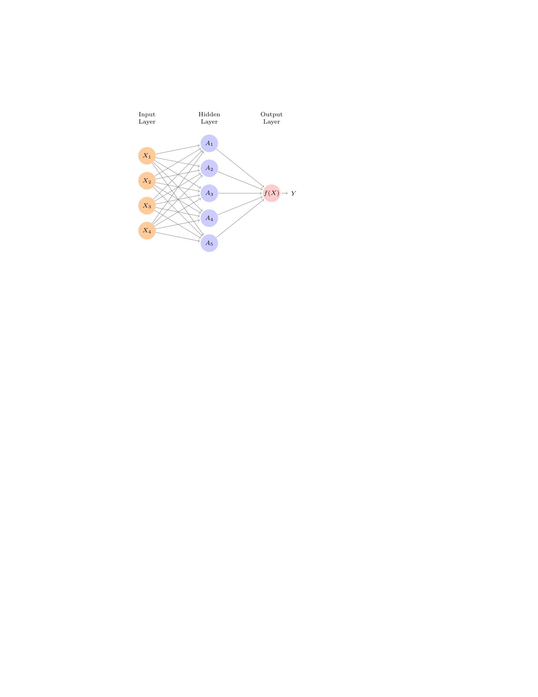
La Figura 2 muestra una neurona individual, ilustrando la combinación lineal y la activación.
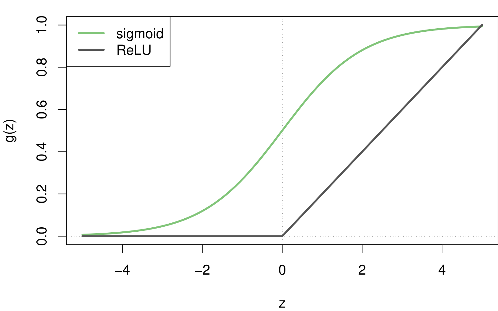
Funciones de Activación
Las funciones de activación más comunes incluyen la sigmoide, la tangente hiperbólica y la ReLU (Rectified Linear Unit). La Figura 3 y Figura 4 muestran estas funciones y sus derivadas.
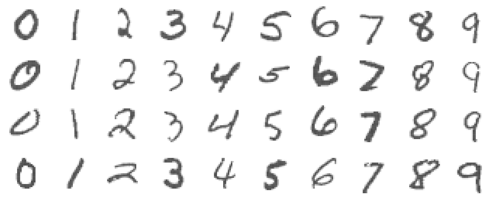
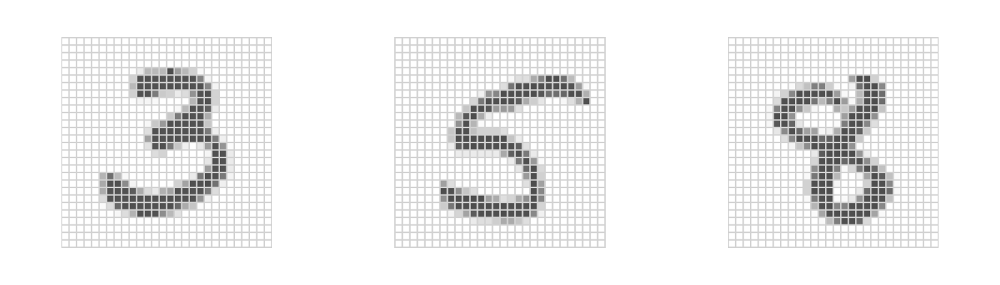
El Problema XOR
El problema XOR (o exclusiva) no es linealmente separable. La Figura 5 ilustra este problema clásico y cómo una red neuronal con una capa oculta puede resolverlo.
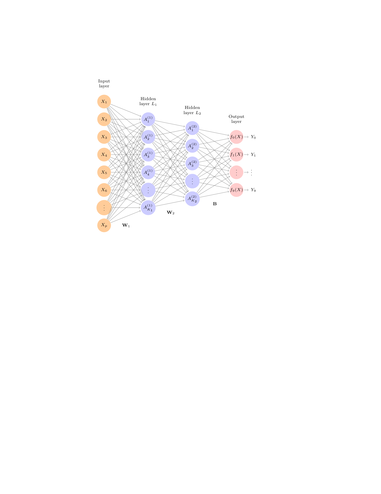
Entrenamiento de Redes Neuronales
Las redes se entrenan mediante retropropagación (backpropagation) del gradiente del error y descenso de gradiente (o variantes como Adam, SGD). Se requieren cuidados especiales para evitar el sobreajuste:
- Parada temprana (early stopping)
- Regularización \(L_2\) (weight decay)
- Dropout: elimina aleatoriamente una fracción de neuronas durante el entrenamiento
Redes Convolucionales (CNN)
Las redes neuronales convolucionales (Convolutional Neural Networks, CNN) están diseñadas para datos con estructura de cuadrícula, como imágenes. Utilizan capas convolucionales que aplican filtros (kernels) a la entrada para detectar patrones locales.
La Figura 6 ilustra una operación de convolución en una imagen.
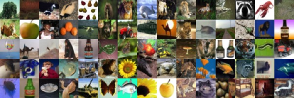
La Figura 7 muestra la arquitectura típica de una CNN con capas convolucionales, de pooling y densas.
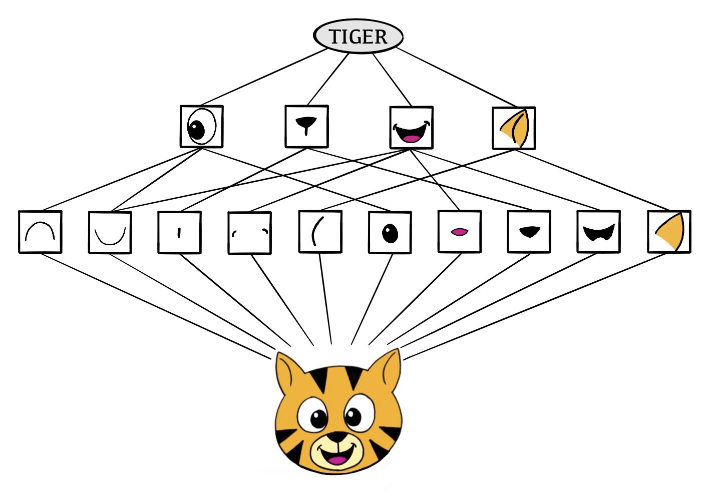
La Figura 8 visualiza los filtros aprendidos por una CNN en las primeras capas, que detectan bordes y texturas simples.
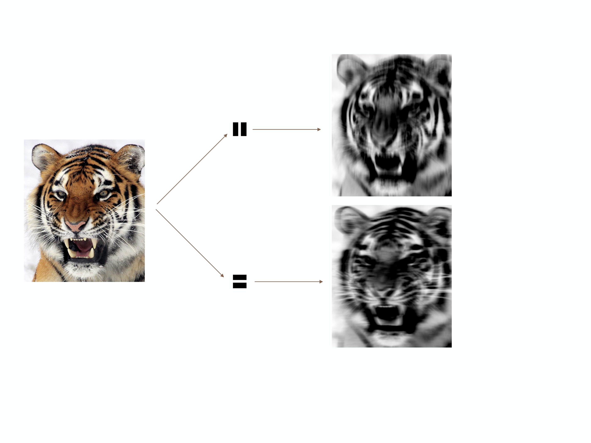
La Figura 9 muestra el efecto de las capas de pooling (max-pooling y average-pooling), que reducen la dimensionalidad y aportan invarianza a pequeñas traslaciones.
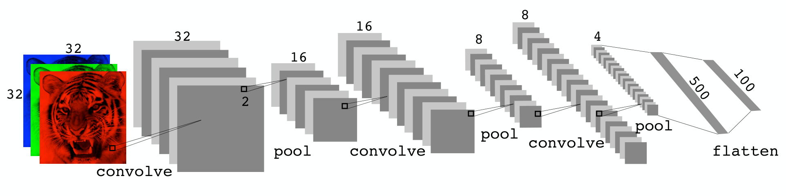
Aumento de Datos
El aumento de datos (data augmentation) genera nuevas muestras de entrenamiento mediante transformaciones aleatorias (rotaciones, desplazamientos, volteos). La Figura 10 muestra ejemplos de imágenes aumentadas.
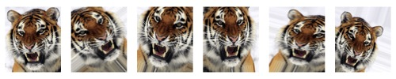
Visualización de Filtros CNN
Las Figura 11 a Figura 16 visualizan los filtros aprendidos por diferentes capas de una CNN entrenada en ImageNet, mostrando cómo las capas profundas aprenden características cada vez más abstractas.

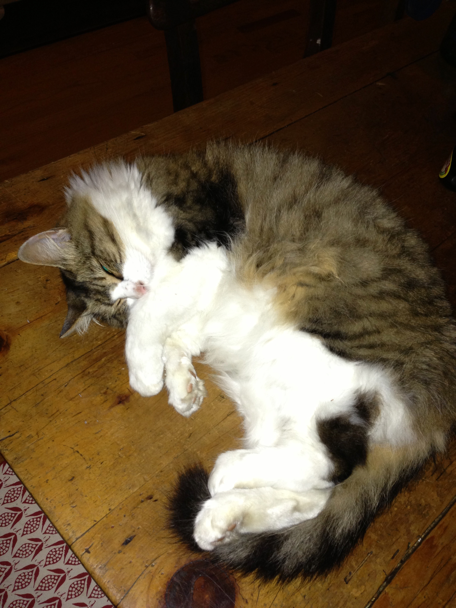
Resultados de CNN
La Figura 17 muestra la precisión de una CNN en el conjunto de datos CIFAR-10 a lo largo del entrenamiento, comparando diferentes arquitecturas.
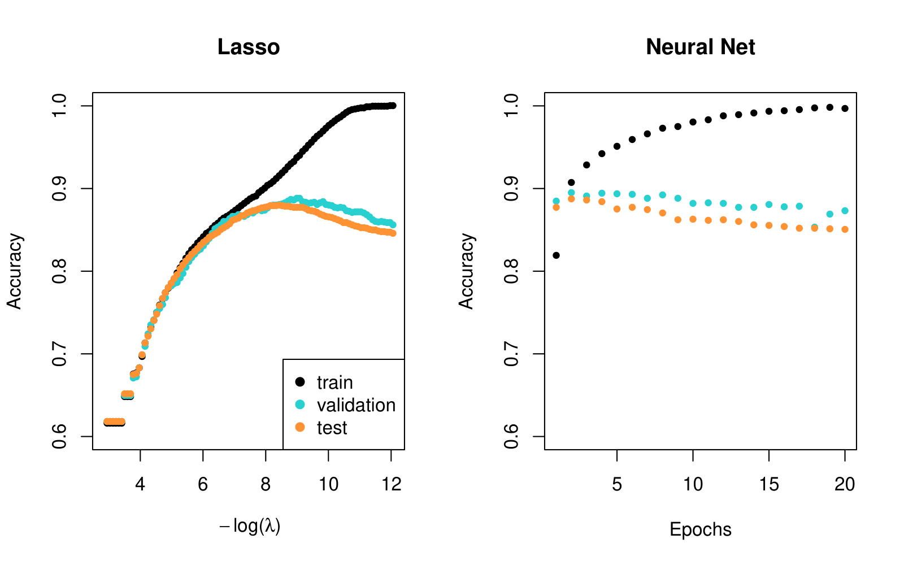
Redes Recurrentes (RNN)
Las redes neuronales recurrentes (Recurrent Neural Networks, RNN) procesan datos secuenciales manteniendo un estado oculto que se actualiza en cada paso temporal.
La Figura 18 muestra la arquitectura básica de una RNN, donde la salida de cada paso depende de la entrada actual y del estado oculto del paso anterior.
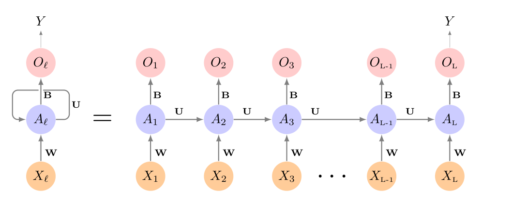
Redes LSTM
Las LSTM (Long Short-Term Memory) son un tipo especial de RNN que introduce compuertas (gates) para controlar el flujo de información y mitigar el problema del desvanecimiento del gradiente. La Figura 19 y Figura 20 ilustran la arquitectura de una LSTM.
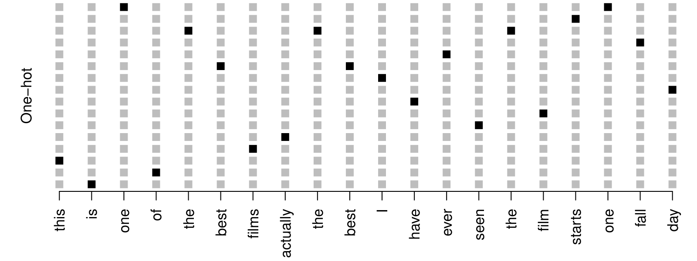
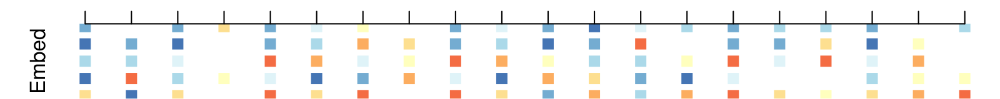
Autoencoders
Un autoencoder es una red neuronal entrenada para reconstruir su entrada a través de un cuello de botella (bottleneck) que fuerza una representación comprimida.
La Figura 21 muestra la arquitectura de un autoencoder con codificador y decodificador.
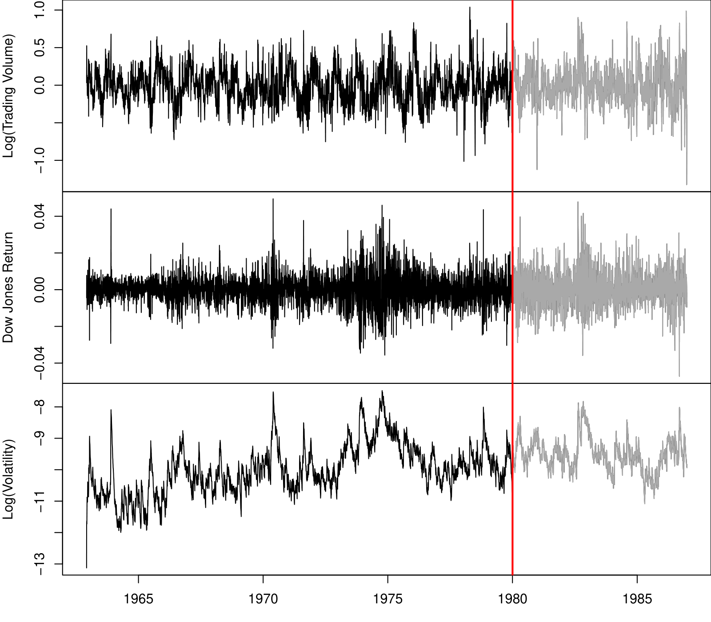
La Figura 22 compara las imágenes originales con las reconstruidas por un autoencoder entrenado en MNIST.
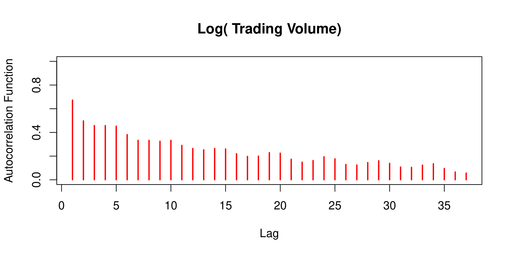
Autoencoder Variacional (VAE)
El autoencoder variacional (Variational Autoencoder, VAE) es un modelo generativo que aprende la distribución latente de los datos. La Figura 23 muestra muestras generadas por un VAE.
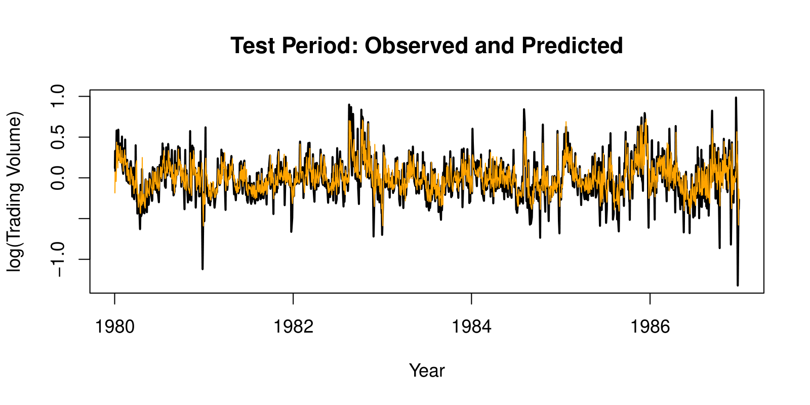
Redes Generativas Antagónicas (GANs)
Las GANs (Generative Adversarial Networks) constan de dos redes: un generador que crea muestras falsas y un discriminador que intenta distinguirlas de las reales.
La Figura 24 muestra muestras generadas por una GAN entrenada en un conjunto de datos de imágenes faciales.
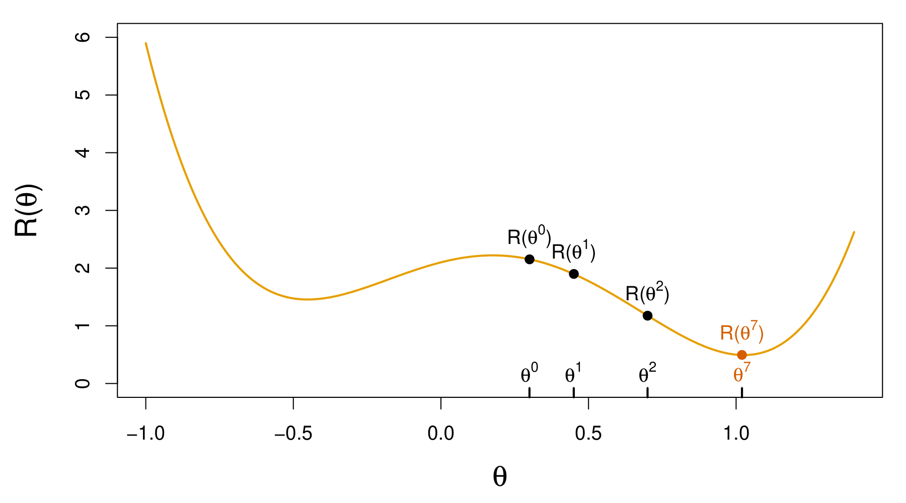
Comparación de Métodos
La Figura 25 compara el rendimiento de diferentes arquitecturas de aprendizaje profundo (MLP, CNN, RNN, LSTM, etc.) en varios conjuntos de datos de referencia.
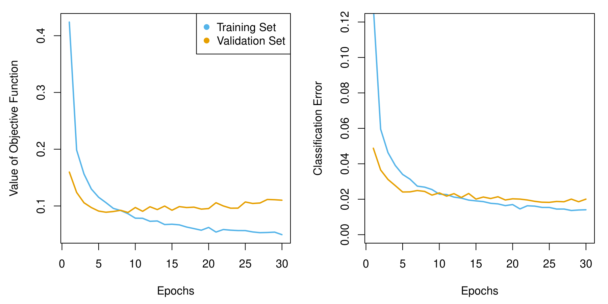
Aprendizaje por Transferencia
El aprendizaje por transferencia (transfer learning) aprovecha modelos pre-entrenados en grandes conjuntos de datos y los ajusta (fine-tune) para una tarea específica.
Las Figura 26 y Figura 27 muestran los resultados del aprendizaje por transferencia, comparando el entrenamiento desde cero con el ajuste de un modelo pre-entrenado.
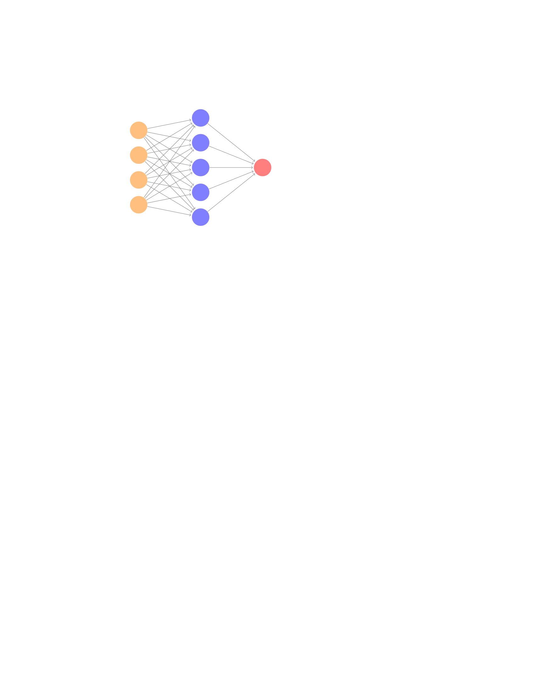
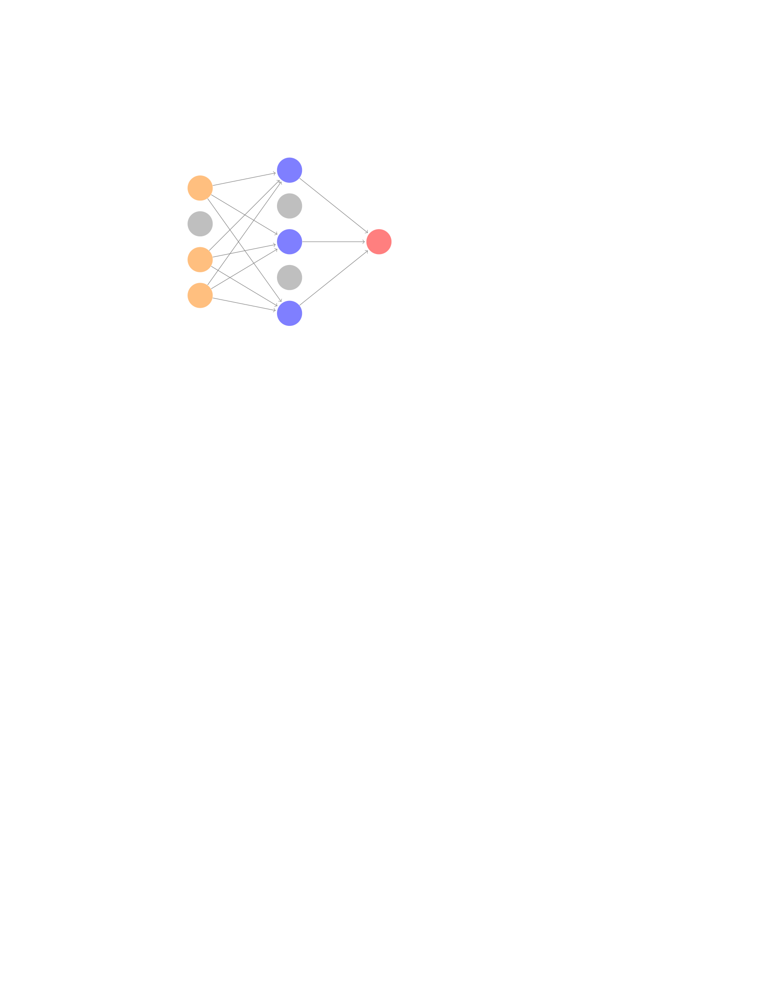
Mecanismo de Atención y Transformers
El mecanismo de atención permite que el modelo pondere dinámicamente la importancia de diferentes partes de la entrada. La Figura 28 ilustra el mecanismo de autoatención (self-attention).
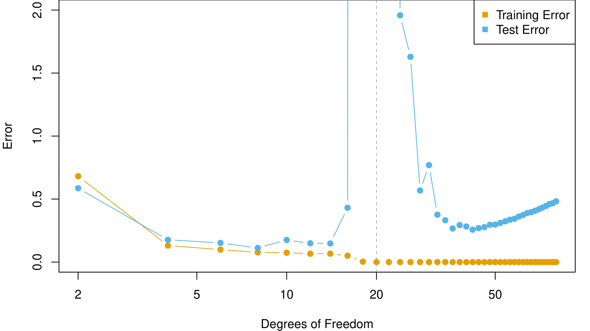
Los transformers son arquitecturas basadas únicamente en atención que han revolucionado el procesamiento del lenguaje natural y la visión artificial. La Figura 29 muestra la arquitectura del transformer original.
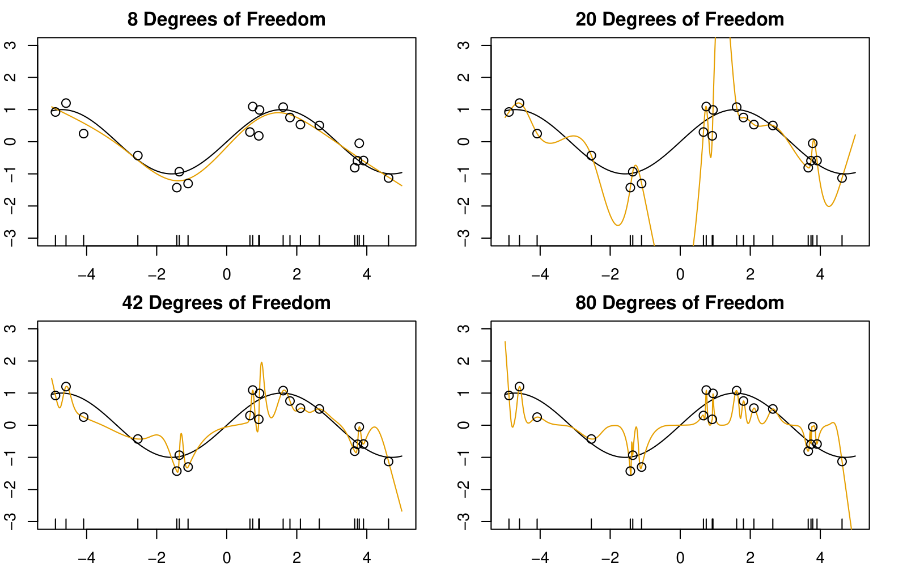
Laboratorio
Los laboratorios con el código completo de este capítulo están disponibles en el sitio oficial del libro: statlearning.com. También puedes acceder a los notebooks en el repositorio oficial de ISLP: ISLP_labs en GitHub.